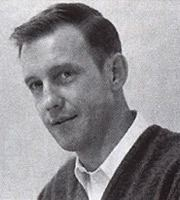
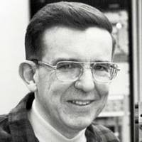

David Paul Gregg (March 11, 1923 – November 8, 2001) was an American engineer. He was the inventor of the optical disc (disk). Gregg was inspired to create the optical disc in 1958 while working at California electronics company, Westrex, a part of Western Electric. His patent for a "Videodisk" was filed in March 1962 (USPO 3350503) while working to advance electron beam recording and reproducing.
Gregg went to work at 3M's Mincom division with experienced television videotape engineers Wayne Johnson and Dean De Moss. The three men subsequently filed patents to cover a disc-recording system, a way to duplicate discs, and reproducing TV signals from photographic discs. When Mincom contracted Stanford's SRI to further the research, Gregg left and formed his own company, Gauss Electrophysics.
In 1968 the Gregg and Gauss patents were purchased by MCA (Music Corporation of America), which helped develop the technology further. His designs and patents paved the way for the LaserDisc, which helped with the creation of the DVD, compact discs, and MiniDisc. In 1963 he also invented a video disk camera which could store several minutes' worth of images onto an optical video disk. There was no patent files for the camera and only little is known about it. Gregg died in Culver City, California in November 2001 at the age of 78.

James T. Russell (born 1931 in Bremerton, Washington) is an American inventor. He earned a BA in physics from Reed College in Portland in 1953. He joined General Electric's nearby labs in Richland, Washington, where he initiated many types of experimental instrumentation. He designed and built the first electron beam welder.
In 1965, Russell joined the Pacific Northwest National Laboratory of Battelle Memorial Institute in Richland. There, in 1965, Russell invented the overall concept of optical digital recording and playback. The earliest patents by Russell, US 3,501,586, and 3,795,902 were filed in 1966, and 1969. respectively. He built prototypes, and the first was operating in 1973. In 1973, 1974, 1975 his first invention viewed by about 100 companies, including Philips and Sony engineers, and more than 1500 descriptive brochures were sent out to various interested parties. The concept was picked up by many technical and media magazines beginning in 1972.
It is debatable whether Russell's concepts, patents, prototypes, and literature instigated and in some measure guided the optical digital revolution. Early optical recording technology, which forms the physical basis of videodisc, CD and DVD technology, was first published/filed by Dr. David Paul Gregg in 1958 and Philips researchers, Kramer and Compaan, in 1969. Russell's optical digital inventions were available publicly from 1970.
In 2000, Russell received The Vollum Award from Reed College. As of 2004, Russell was doing consulting from an in-home lab, in Bellevue, Washington.